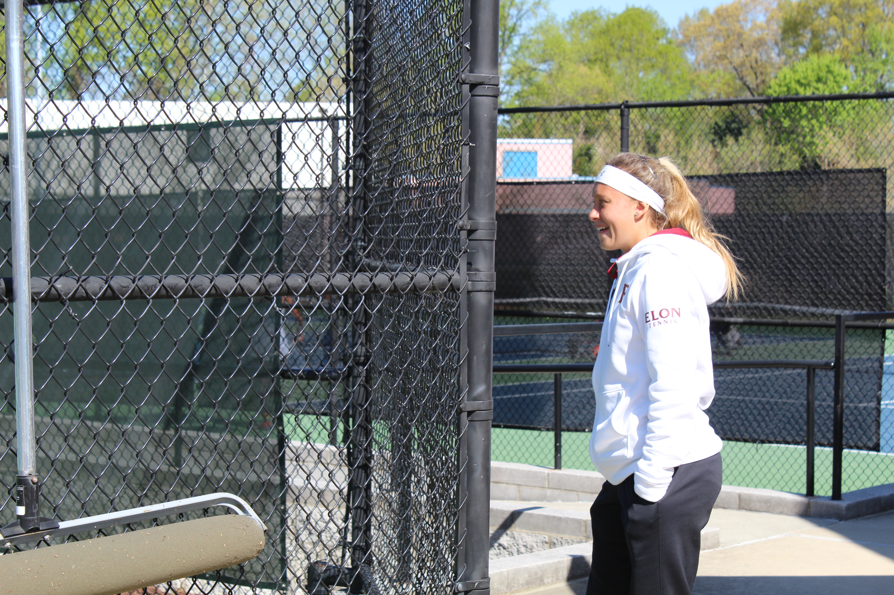
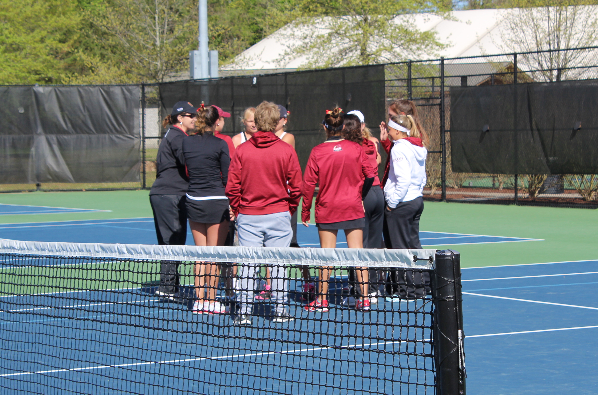

Down the road or around the world
Elon's international athletes bring unique perspectives to the Phoenix
By Erik Webb & Elizabeth Bilka
April 26, 2018
Elon's international athletes bring unique perspectives to the Phoenix
By Erik Webb & Elizabeth Bilka
April 26, 2018

From down the road or across the world, Elon University prides itself on bringing in students of diverse backgrounds who will become globally-engaged members of the community.
International students are a specific piece of that puzzle as students at Elon come from 46 countries outside of the United States – the most popular country represented being the United Kingdom.
International student-athletes are no different. Below is a map of the hometown location of every student-athlete at Elon, allowing you to visualize from where athletes come and sorted by sport.
Though they may come from a wide range of places, the recruiting process for international athletes is very similar.
As a Division I institution, Elon has to follow the strict NCAA rules for recruiting athletes to come play their respective sports for the Phoenix. For international athletes, the process is nearly identical.
“We get videos the same as we would from U.S. players and we assess them and try to communicate and really get to know the person,” said Marc Reeves, Elon’s men’s soccer head coach. “YouTube and all the other platforms allow kids to make great highlights and really share with you. Or even live streaming of games around the world now allows you to really evaluate players a lot more calculated than before.”
Sophomore women’s tennis player Sofia Edo got in contact with head coach Elizabeth Anderson after posting her highlight reel online and having her friend on the men’s team, another Argentina native, helped her get connected. As the team was looking to fill an empty spot, Anderson helped Edo through the process that resulted in her ending up at Elon.
Technology has made the process easier on all parties involved as coaches are able to evaluate players on the other side of the country or the other side of the world in the same way.
“Text messaging, WhatsApp and video calls allow you to really get to know a person whereas before it was over the phone and maybe not so good,” Reeves said.
This was true in the recruiting process of junior forward Karolis Kundrotas on the men’s basketball team. During his recruiting cycle, the Lithuanian native said he was in direct contact with head coach Matt Matheny and assistant coach Jack Wooten. The daily conversations that they had, in addition to the videos of Kundrotas playing, helped him end up at Elon.
But if you ask Reeves, nothing beats seeing the athlete play in play in person.
To do that, Elon will pay for the athletes to come to campus, similar to a job interview, if the coaching staff cannot come to see them in their respective country. This was the case for redshirt-senior midfielder Marcel Fahrenholz who plays under Reeves’ leadership. Originally at a small school in Alabama, the Germany native came to visit Elon before joining the Phoenix in 2016. After having an American coach in Alabama who wasn’t on the same page soccer wise, having a coach from England was something that drew Fahrenholz to the Phoenix more than other schools he was looking at.
To do that, you have to find out about Elon first.
Elon University, a small private school nestled in the middle of Alamance County in North Carolina, is not the most well-known college in the country. But there are still a number of international athletes who make the journey from their countries for the chance to play Division I athletics for the Phoenix.
Sophomore women's tennis player Sofia Edo watches the Colonial Athletic Association tournament from the sidelines.
Edo said that she wanted to continue playing tennis at a high level, but found out about Elon though a friend on the men’s tennis team. Aside from the competitive tennis, Edo’s research into the school proved to her that Elon was a “good academic school,” especially because she was thinking about studying communications or business.
For international athletes, the way they hear about Elon differs just like other students. For Kundrotas, the coach at his school in England where he was playing prior to Elon knew Matheny and put the two in contact. Matheny was looking for a “tall man who could shoot,” and Kundrotas fit that bill.
Because some sports are more popular overseas, there is a higher representation of international athletes on teams like soccer rather than American sports like baseball or football.
Averaging the distance from every athlete’s hometown, you can see that to be true. Women’s golf comes from the farthest average location, whereas football tends to have athletes from the closest location. No matter what the distance is, Reeves thinks that Elon is what student-athletes are looking for.
“I think the most fortunate thing about Elon is that we’re able to combine high-level academics and high-level soccer,” he said. “We’re not looking for a good player to come in and just get through in the class. We’re not looking for a great academic to come in and not have an impact on the field. We’re looking for a balance of both and Elon truly offers that.”
Many international athletes faced challenges when they first arrived to the United States for school. Reeves said the first few weeks can be the toughest period for athletes.
"If you dump someone in a brand new country the language can sometimes obviously be a barrier but the food, living, time zones, homesick all of those things come into account especially earlier in the process."— Marc Reeves, men's soccer head coach
Reeves said there are some parts about living at home Elon can’t replicate.
“There’s nothing like a home-cooked meal or a hug from your mum, but we can’t do everything,” he said.
Sofia Edo said the distance between her and her family was her biggest concern when coming to Elon.
“I didn’t know if I was going to be able to be away of my family that much time,” she said, “It’s like eight months away.”
The Elon University women's tennis team huddles during the Colonial Athletic Association tournament April 20.
Each of the athletes had to deal with time zone differences, between one to seven hours ahead of Elon. However, athletes said modern technology, like Facetime and Skype, have made communicating with loved ones easier.
“I talk with my mom every single day at least an hour with her on the phone,” Edo said, “I think it’s stayed the same – I’m very close with my family and my friends and the distance hasn’t changed that at all.”
Fahrenholz has a twin brother who plays club soccer an hour away from their home and said they both communicate with their parents the same way.
“We both can’t visit them personally that often so he facetimes with them, I facetime with them so in the digital age that we are in right now I feel like there’s not too many barriers to talk to relatives back home,” he said.
Some athletes also have to get used to a different language. Fahrenholz said he struggled with English when he first arrived at Alabama, but by the time he came to Elon, he overcame that challenge. Edo said she knew English before coming to the United States, but still considered it a challenge. Reeves said being immersed in the language through interactions in the locker room, practice fields, and classroom helps athletes develop their language skills.
Each athlete also had unique challenges based on their own personal experiences. Kundrotas had difficulties getting used to the differences in transportation. In his native London, he had different modes of public transportation like the tube and buses while in the United States, he said he needs a car. Kundrotas said he also felt different because of his accent. Edo said the difference in food, meal times, and being on time to places were different from her native Argentina.
“It’s normal to be five minutes late,” she said, “Here, if you’re one minute late, you’re actually late.”
Fahrenholz said his biggest challenge at Elon was the change in academic rigor. But in Alabama, he also overcame struggles. Four days after coming to America, Fahrenholz tore his ACL. He considered going back to Germany, but decided to stay.
“If I started something I want to finish it so I grew as a person in that I realized more what I have of things,” he said.
Reeves said the trips between Elon and the countries where international athletes can take just as long as the drives for some domestic students.
Even New Jersey is an eight hour drive. You know it’s not a lot different from an 8 hour flight to England."— Marc Reeves, men's soccer head coach
The athletes attributed their successes at Elon to their teammates, and others on campus.
“I think that being part of a team really helped me a lot to adapt to the culture because I was already part of a group and so it was easier for me to have friends and be part of something,” Edo said.
“I’ve grown into a little family and everyone around Elon too,” Kundrotas said, “Just you’re walking down campus and you’ll see maybe five people on the way to class that you know.”
Berkane said Elon has connected him with teammates and “obviously friends who I have for life now”. Fahrenholz said then-men’s soccer head coach Christ Little, his assistant coaches, and athletics academic advisor Karen Neff helped him when he first came to Elon.
Reeves said what makes Elon athletes stand out is the ability to get a degree while playing sports at a collegiate level. He said having the degree can be useful for athletes who want to play professionally after college.
“That career can be cut short at any moment or even if extended through can be done around say around thirty, thirty three, which means you have a lot of years left to fend for yourself and a degree from Elon can really assist in being beneficial to the world,” he said.
Marcel Fahrenholz said the ability to get a degree while playing soccer is an opportunity he did not have back home in Germany.
“You can play on a high level soccer wise and you practice twice a day or you can go to school but you can’t really combine both so that’s the biggest advantage that you have in America,” he said.
Reeves said the Elon experiences can help athletes prepare for whatever can happen after they graduate.
“We want to make sure we’re pushing all of them so our players leave here prepared for life, no matter where it takes them,” he said.